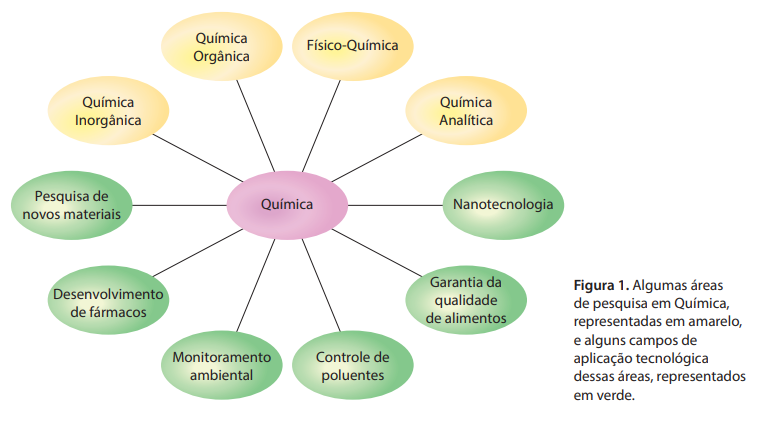
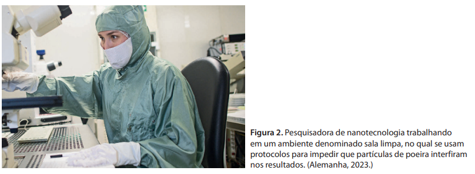
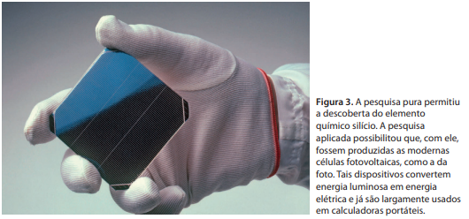
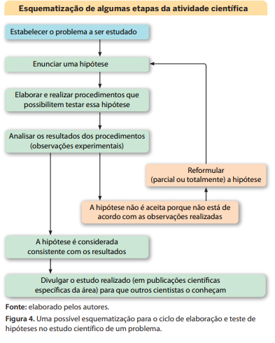
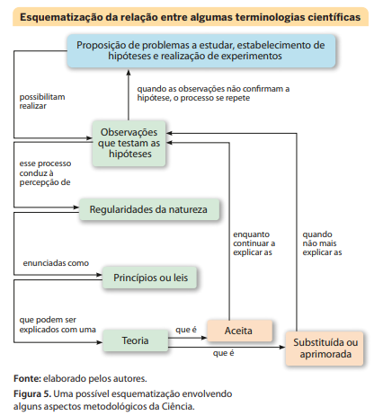

Introdução à Química
A atividade dos cientistas inclui metodologias características. Às vezes, aplicamos procedimentos característicos da Ciência sem nos darmos conta. Isso pode acontecer, por exemplo, quando analisamos acontecimentos como o estouro da pipoca. Em um primeiro momento, podemos nos perguntar “por que a pipoca estoura?”. Diante disso, levantamos hipóteses para explicar esse fenômeno.
Depois de levantar uma hipótese, realizamos ações para comprovar sua validade. Nesse caso, podemos estourar a pipoca variando parâmetros como a quantidade de óleo e a intensidade da chama. Se as ações confirmarem a hipótese, a pergunta é respondida. Caso contrário, é necessário propor novas hipóteses e verificar se elas respondem à pergunta.
1. Aprender Química para o exercício da cidadania
Imagine que, nos sacos de papel usados para embalar alimentos produzidos por uma padaria, apareça a inscrição: “pão sem química”. Pode até ser que, para algumas pessoas, esses dizeres transmitam a ideia de um pão isento de substâncias prejudiciais à saúde. Essa frase, contudo, é totalmente incorreta, porque na produção do pão utiliza‑se farinha de trigo como matéria‑prima, e o que ocorre é que parte da farinha passa por uma reação química (denominada fermentação). Desse modo, mesmo sem saber Química, o padeiro executa, todos os dias, essa reação.
Ao utilizar a expressão “pão sem química”, uma pessoa revela desconhecer que:
- todos os materiais, objetos e produtos existentes (incluindo os pães) são constituídos de substân cias químicas;
- a Química não é um objeto e, portanto, não pode ser colocada em um pão. A Química é uma ciência, ou seja, um ramo do conhecimento humano que visa compreender melhor alguns fenômenos que ocorrem na natureza e/ou em um laboratório, estudando‑os com uma linha organizada de trabalho;
- ao fazer o pão, o padeiro utiliza transformações químicas (reações químicas).
Assim, aquilo que é erroneamente denominado “pão sem química” é, na verdade, um pão obtido a partir de substâncias e reações químicas, mas sem a adição de substâncias que possam ser nocivas à saúde.
Analogamente, frases como “remédios contêm muita química”, “alimentos enlatados fazem mal porque os fabricantes adicionam muita química” ou “aquela piscina tem um sistema de tratamento totalmente isento de química” também estão incorretamente elaboradas, pois confundem uma importante ciência com substâncias tóxicas ou com produtos e processos danosos ao ser humano.
Em nosso dia a dia, é frequente encontrarmos indicações de substâncias químicas nas embala gens de alimentos, nos frascos de cosméticos, nos rótulos de produtos de limpeza, nas etiquetas de roupas, nas caixas e bulas de remédios e em tantos outros objetos.
Da imensa variedade de produtos colocados à venda, a maioria deles, senão todos, provém de indústrias químicas ou, então, entrou em contato durante sua manufatura com produtos delas pro venientes (por exemplo, sabões, detergentes, medicamentos, cremes dentais, cosméticos, plásticos, borrachas, metais, papéis, colas, tintas, combustíveis, sais, açúcares, vinagres, aditivos alimentares, refrigerantes, fibras têxteis, pilhas e baterias). Virtualmente, tudo o que encontramos à venda se relaciona de alguma forma com a indústria química. O produto usado nas embalagens, papel, plástico, vidro ou metal e a tinta nelas utilizadas são obtidos por meio de processos químicos. Itens empregados na construção de casas, prédios, automóveis, aviões, embarcações, computadores e eletrodomésticos constituem outros exemplos de materiais que se relacionam com as indústrias de processos químicos, nas suas mais diferentes modalidades e especialidades. Os medicamentos são substâncias químicas devidamente estudadas e longamente testadas, extraídas da natureza ou fabricadas artificialmente, purificadas, dosadas e comercializadas.
Do mesmo modo que substâncias químicas podem contribuir para o bem‑estar da humanidade, elas também podem ser usadas incorretamente(por ignorância, incompetência, ou ganância) e acarretar doenças, poluição e desequilíbrios ecológicos.
Assim, apesar de toda a importância dessa ciência e de suas aplicações, há muita confusão no que diz respeito à palavra “química”. É comum ouvirmos seu nome sendo usado impropriamente como sinônimo de “substâncias tóxicas”, “veneno” ou “poluição”.
Aprender Química é se envolver num estudo das substâncias presentes ao nosso redor, analisando de onde vêm, quais suas propriedades, que utilidades possuem e quais as vantagens ou os proble‑ mas que eventualmente podem trazer à humanidade. Um cidadão participativo e capaz de tomar as melhores decisões para si e para sua comunidade precisa, entre outras coisas, ter noções claras sobre Ciência e Tecnologia. Assim, dominar os conceitos científicos e compreender os fenômenos que nos rodeiam é uma importante condição para o exercício da cidadania.
2. Os vários aspectos da Química
Algumas áreas de atuação da Química
A Química é uma ciência que inclui o estudo das substâncias, naturais ou artificiais, visando ao conhecimento de sua constituição, de suas propriedades, de suas transformações e da maneira como se formam, tanto em processos naturais quanto em laboratórios ou indústrias.
A Química inclui áreas como Química Inorgânica, Química Orgânica, Físico‑Química e Química Analítica, e cada uma apresenta objetivos específicos. A Química Analítica, por exemplo, utiliza métodos fundamentados em conhecimentos químicos, físicos e biológicos para determinar a composição e a qualidade de alimentos, medicamentos, matérias‑primas e também da atmosfera, das águas, das rochas e dos solos.

Desde o início do século XX, a atuação da Química foi fortemente influenciada por avanços da Física Moderna, originando novas frentes de pesquisa e aprimorando outras. Podemos mencionar, por exemplo, pesquisa de materiais de interesse da sociedade (ligas, cerâmicas, polímeros, nanomateriais etc.), o desenvolvimento de novos fármacos (substâncias com atuação medicamentosa) e de métodos para monitoramento dos ambientes, controle da poluição, garantia da qualidade de alimentos e reciclagem de materiais(Fig. 1). A nanotecnologia, por exemplo, é um ramo da atividade tecnológica que utiliza Ciências da Natureza e Engenharia na modificação da estrutura dos materiais com propósitos tecnológicos. A escala de tamanho com a qual trabalha a nanotecnologia situa‑se geralmente entre 1 e 100 nanômetros (um nanômetro equivale a um bilionésimo de metro)(Fig. 2).

A Química possui linguagem própria
Diversos ramos do conhecimento humano, por vezes, servem‑se de códigos para expressar as ideias de maneira concisa.
A Química, assim como a Música, a Computação e a Eletrônica (apenas para citar alguns exemplos), utiliza‑se de representações que podem ser entendidas por qualquer pessoa familiarizada com elas. Ao longo de seus estudos de Química, você adquirirá informações que lhe permitirão entender essa linguagem. Em breve, fará leituras do tipo:
Em equação: C (graf.) + O2 (g) → CO2 (g)
Em palavras: Carbono grafite reage com gás oxigênio produzindo gás carbônico.
Uma sonata para piano escrita por Mozart (compositor austríaco) pode ser entendida e interpretada tanto por um pianista chinês quanto por um brasileiro porque a linguagem das partituras musicais é universal. O mesmo acontece com a linguagem química. Isso é importantíssimo no que diz respeito à comunicação científica ao redor do mundo.
O caráter experimental da Química
Assim como acontece com as outras Ciências da Natureza (Física, Biologia etc.), a Química baseia‑se na observação de acontecimentos (fenômenos) da natureza, além de envolver execução de experimentos em laboratório e a cuidadosa observação e interpretação dos resultados.
Quando um cientista realiza experimentos e obtém resultados importantes, geralmente ele os publica em revistas especializadas de circulação internacional. Sua descrição deve ser precisa o suficiente para que outros cientistas possam reproduzir tais experimentos para conferir os resultados. Caso contrário, suas conclusões não serão aceitas pela comunidade científica. Assim, uma preocupação importante relacionada com os experimentos é a sua reprodutibilidade.
O caráter puro e aplicado da Química
Uma pesquisa química pode estar voltada apenas para o melhor entendimento de algum fato da natureza; nesse caso, temos uma pesquisa pura. Por outro lado, ela pode estar focada em resolver um problema prático, tratando‑se, então, de uma pesquisa aplicada (Fig. 3).

Os conhecimentos adquiridos na pesquisa pura auxiliam os cientistas nas pesquisas aplicadas. Foi o que aconteceu, por exemplo, com José Bonifácio de Andrada e Silva (1763‑1838), estadista do período imperial do Brasil. Ele atuou também como geólogo e descreveu doze novos minerais. Em dois deles – a petalita e o espodumênio - o sueco Johan August Arfvedson (1792‑1841) descobriu, em 1817, um novo elemento químico: o lítio.
A pesquisa pura realizada por ambos, que propiciou a descoberta do lítio, permitiu que hoje esse elemento químico seja empregado em baterias, produtos cerâmicos, esmaltes e lubrificantes.
O caráter interdisciplinar da Química
No decorrer de seus estudos de Química, você perceberá que, muitas vezes, essa ciência utiliza conceitos de outras áreas, como a Matemática, a Física e a Biologia.
A Computação também auxilia muito a Química. Os computadores são uma importantíssima ferramenta, tanto para a execução de cálculos e a realização de simulações de situações reais quanto para a organização da imensa quantidade de informações sobre compostos químicos e reações químicas que surge todos os anos.
Ao se aliar à Engenharia, a Química tem propiciado a elaboração de novos materiais, por exemplo, as cerâmicas que suportam altas temperaturas, os plásticos altamente resistentes e os materiais supercondutores. A Medicina, talvez a mais antiga das ciências associadas à Química, é uma das maiores beneficiadas com os modernos avanços dessa área. Anualmente, são descobertas novas substâncias que têm ação terapêutica e podem vir a ser utilizadas como medicamentos.
Todas as aplicações que mencionamos representam apenas parte do que existe em termos de avanço científico e tecnológico ligado à Química. Nenhum progresso, contudo, seria possível em tais campos se os conceitos básicos da Química não fossem bem compreendidos. São esses conceitos, que discutiremos ao longo de seus estudos de Química, que formam o alicerce de todo o conhecimento químico atual. Embora sejam conhecimentos básicos, você perceberá a grande diversidade de aplicações práticas que eles possuem.
Os saberes científicos são provisórios e têm uma história
Existe uma visão distorcida da Ciência, frequentemente mostrada e reforçada em alguns filmes e livros, segundo a qual os grandes progressos da Ciência se deveriam a alguns poucos indivíduos excepcionais que têm inspirações súbitas e geniais. Pois saiba que essa visão distorcida não corresponde nem de perto ao modo como a produção científica acontece no mundo real. A Ciência é uma construção coletiva e dinâmica. O conhecimento científico evolui graças à atividade de uma grande comunidade formada por indivíduos que atuam em todo o mundo.
Os saberes científicos não são estáticos, finalizados ou imutáveis. Ao contrário, são considerados permanentemente provisórios, pois novos questionamentos, novos resultados experimentais e novas maneiras de interpretar as observações e de formular ideias surgem continuamente, fazendo com que as ideias científicas precisem ser reavaliadas, aprimoradas ou substituídas.
A história da Química é repleta de exemplos de que o fazer científico avança de maneira coletiva. Nos séculos XX e XXI, por exemplo, com o trabalho de grande número de pesquisadores ao redor do mundo, aliado a diversos avanços tecnológicos, houve considerável evolução do conhecimento químico. O átomo teve sua estrutura interna pesquisada, substâncias químicas artificiais foram sintetizadas e modernas técnicas de investigação foram desenvolvidas. Materiais sintéticos inovadores foram criados e aplicações químicas em novos diagnósticos e tratamentos médicos proliferaram, apenas para citar alguns poucos exemplos.
As pesquisas em Química pura e em Química aplicada prosseguem continuamente, já que a atividade científica é dinâmica e os conhecimentos científicos estão sempre sujeitos a reinterpretações e eventuais modificações.
Alguns aspectos metodológicos da Ciência
A pesquisa científica emprega metodologias, protocolos e linhas de raciocínio que podem variar conforme as especificidades da área de atuação e do objeto em estudo. Existem, contudo, algumas terminologias que estão presentes em todas as Ciências da Natureza. Vamos agora, em linhas gerais, comentar o significado dessas terminologias.
Um cientista decidido a atuar em qualquer ramo das Ciências da Natureza precisa, antes de mais nada, estudar o que já se descobriu a respeito do assunto escolhido. A partir daí, deve decidir qual problema investigará e elaborar uma hipótese acerca da resposta desse problema. Uma hipótese científica é uma proposta de explicação fundamentada em conhecimentos previamente existentes no repertório da Ciência e também em conjecturas, isto é, suposições consideradas prováveis.
A seguir, o cientista deve realizar procedimentos que lhe permitirão executar observações experimentais para testar a hipótese elaborada. Essas observações podem ser de dois tipos:
- qualitativas: aquelas que não envolvem dados numéricos;
- quantitativas: as que provêm de medidas, obtidas com a utilização de instrumentos, e constituem‑se de dados numéricos.
Com base na análise dos resultados experimentais, isto é, das observações realizadas, a hipótese pode ser aceita ou não. Caso não seja aceita, uma nova hipótese é formulada, novos experimentos são realizados e o ciclo se repete. Caso a hipótese seja aceita, isso não significa que ela é uma verdade incontestável e eterna. Ela poderá ser submetida a novas situações de teste, em que novas observações são realizadas. A hipótese continuará a ser aceita pela comunidade científica enquanto não surgirem fatos que a invalidem.
O ciclo que comentamos pode ser esquematizado de diferentes maneiras; uma delas está na Figura 4.

Após a execução de muitos experimentos que possibilitem observar determinada regularidade natural (isto é, um comportamento que se repete em determinadas circunstâncias específicas), pode‑se enunciar um princípio ou uma lei, ou seja, uma frase ou equação matemática que expresse a regulari‑ dade observada.
Quando uma hipótese de determinada área científica é testada e aceita como explicação plausível (possível) para um número suficientemente grande de observações científicas, ela passa a ser conhe‑ cida como uma teoria, ou seja, uma proposta de explicação para fatos experimentais e/ou leis. Uma teoria é considerada satisfatória quando, ao ser testada em novas situações, obtém sucesso. Quando tal sucesso não é conseguido, ela deve ser modificada ou, dependendo do caso, abandonada e subs‑ tituída por outra melhor.
A Química é uma ciência e, como tal, está em contínuo processo de evolução e aperfeiçoamento. As ideias científicas são permanentemente provisórias, e isso está de acordo com o caráter dinâmico das Ciências da Natureza.
A Figura 5 apresenta uma das maneiras possíveis para expressar a relação entre a constatação de regularidades naturais, o enunciado de princípios ou leis, e a aceitação de teorias.

Exercícios
1. Na atividade científica, a etapa em que um(a) cientista estabelece o problema a estudar:
- a. é um passo inicial do processo, pois é importante na definição de etapas posteriores, como a elaboração de hipóteses.
- b. vem depois da confirmação da validade da teoria que o(a) cientista propôs.
- c. ocorre necessariamente após a realização de experimentos, uma vez que depende dos resultados obtidos nesses experimentos.
- d. sempre acontece junto com a realização de observações experimentais.
- e. é uma etapa final do processo, que ocorre junto com a publicação dos resultados.
2. Uma teoria científica é:
- a. uma verdade aceita como correta sem necessidade de demonstração.
- b. uma ideia decorrente apenas do uso do bom senso e que, por isso, é aceita pelos cientistas como uma explicação correta para um conjunto de fenômenos.
- c. uma ideia que surge abruptamente durante a realização de um experimento e que precisa ser rapidamente registrada antes que seja esquecida pelo(a) cientista que a concebeu.
- d. uma verdade que é firmemente demonstrada como correta por meio da realização de grande número de experimentos e que, devido a essa confirmação experimental, não está sujeita a ser questionada ou modificada, sendo considerada uma descoberta científica.
- e. uma explicação aceita pela comunidade científica para explicar um número suficientemente grande de observações científicas, que não é considerada imutável e que pode ser eventualmente aprimorada ou substituída por outra.
3. Uma lei científica, também chamada de princípio científico, é:
- a. o mesmo que hipótese científica.
- b. o mesmo que teoria científica.
- c. uma frase ou uma equação matemática que expressa uma regularidade observada em fenômenos estudados pelas Ciências da Natureza.
- d. uma frase ou uma equação matemática que é mentalmente inventada por um(a) cientista e que, por esse motivo, precisa ser testada por meio de experimentos científicos.
- e. o nome dado a qualquer hipótese que foi confirmada por ao menos um experimento.
4. Uma pessoa afirma: “Eu tenho uma teoria sobre por que meu amigo está irritado hoje!”. O significado da palavra “teoria” nessa frase é diferente do significado quando ela é usada em Ciências da Natureza? Explique.
5. A astrologia – atividade que realiza previsões sobre o futuro com base na posição de astros e estrelas no céu – não é reconhecida como Ciência pela comunidade científica. Quais seriam os motivos pelos quais não há esse reconhecimento?
6. Em Ciências da Natureza, em vez de dizer que determinada teoria é “verdadeira”, prefere-se dizer que ela é “atualmente aceita”. Por que os cientistas fazem essa distinção?
7. Leia o texto a seguir e faça o que se pede.
Os cientistas devem aceitar seus resultados experimentais mesmo quando gostariam que eles fossem diferentes. Precisam esforçar-se para distinguir entre o que veem e o que desejariam ter visto, pois os cientistas, como a maioria das demais pessoas, têm grande capacidade de enganar a si mesmos. As pessoas têm sempre a tendência de adotar regras gerais, convicções, crenças, ideias e hipóteses sem questionar profundamente a sua validade e a retê-los por muito tempo mesmo depois de terem se mostrado sem significado, falsos ou no mínimo questionáveis. As suposições mais difundidas são frequentemente as menos questionadas. Muitas vezes, quando uma ideia é adotada, uma atenção especial é dada aos casos que parecem confirmá-la, ao passo que aqueles casos que parecem contrariá-la são distorcidos, menosprezados ou ignorados.
Fonte: HEWITT, P. G. Conceptual Physics. 13. ed. Harlow: Pearson, 2023. p. 32. (Tradução dos autores.)
- a. Reescreva, com suas palavras, o trecho a seguir:
- b. Agora considere o seguinte trecho do texto:
“Muitas vezes, quando uma ideia é adotada, uma atenção especial é dada aos casos que parecem confirmá- -la, ao passo que aqueles casos que parecem contrariá- -la são distorcidos, menosprezados ou ignorados”.
Se necessário, consulte um dicionário de português para encontrar substitutos para as palavras do texto cujo significado desconheça. Ao elaborar essa nova redação, procure deixar bem evidente o significado da frase em questão. Qual é a importância de considerar os casos que contrariam uma hipótese?
“As pessoas têm sempre a tendência de adotar regras gerais, convicções, crenças, ideias e hipóteses sem questionar profundamente a sua validade e a retê-los por muito tempo mesmo depois de terem se mostrado sem significado, falsos ou no mínimo questionáveis.”
Considerando o que aprendeu sobre metodologia científica, explique por que uma crença ou convicção pessoal não pode ser considerada um fato científico.